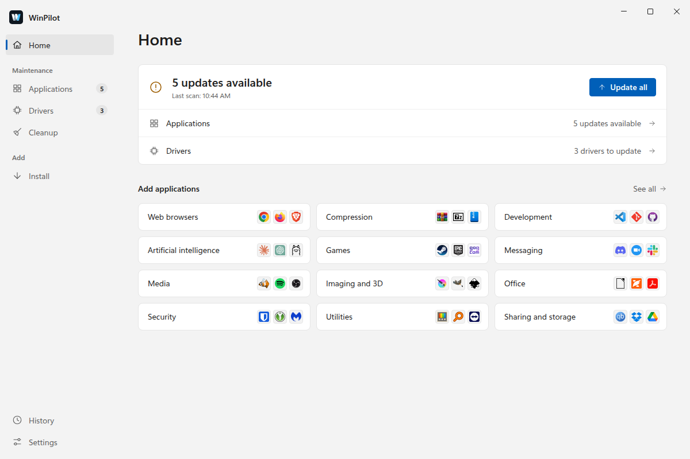
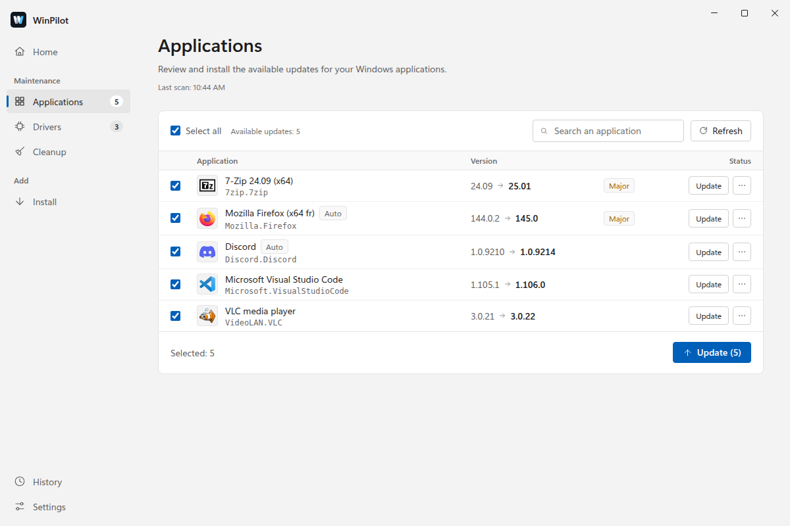
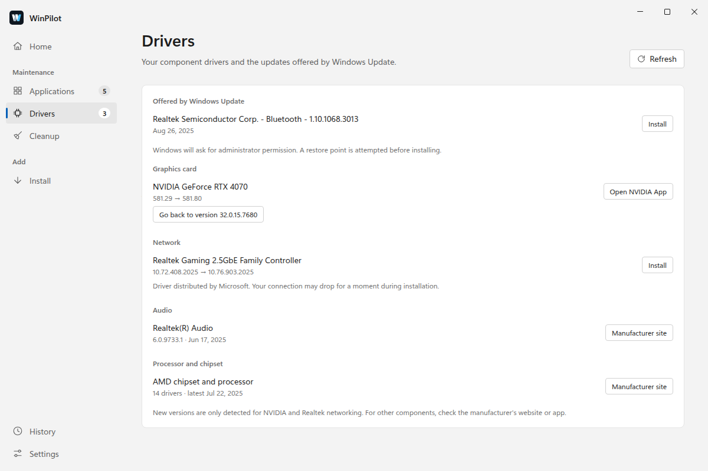
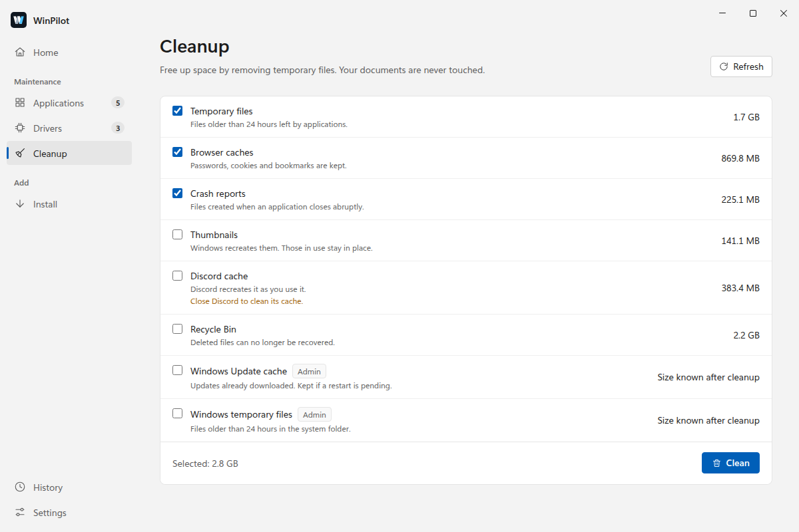
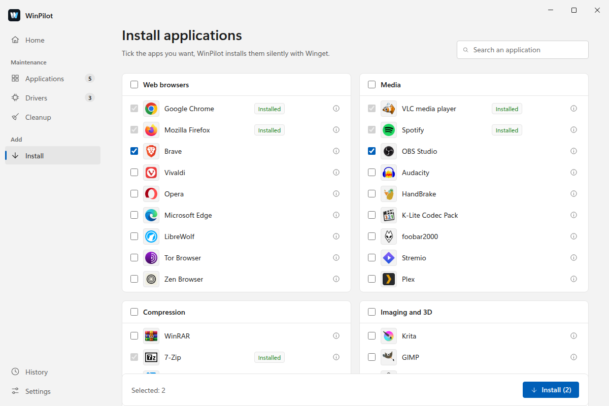
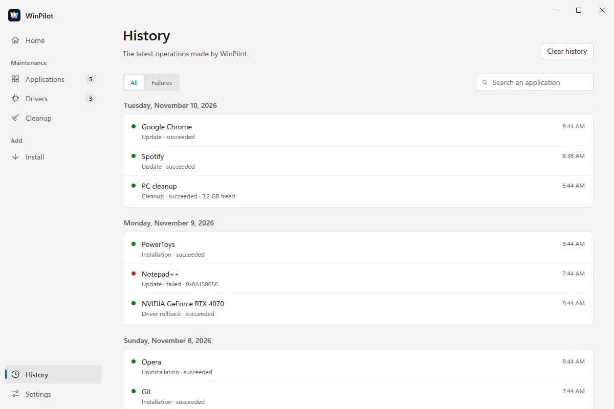

Your Windows PC,
always up to date.
WinPilot updates your apps with winget, keeps an eye on your drivers and frees up disk space. No command line needed.

All your PC upkeep in one place
Apps, drivers and disk space: WinPilot shows you what can be done, and you confirm.
Up-to-date apps
See what has a new version, read the release notes, then update everything or only what you tick. Major versions are flagged.
Drivers
WinPilot lists the drivers of your components and the ones Windows Update offers. A restore point is attempted before each install, and you can roll back to the previous version.
Careful cleanup
Temporary files, browser caches, crash reports, Recycle Bin: you see the space you will get back before confirming. Your documents are never touched.
99 apps a click away
A catalog in 12 categories: tick, and WinPilot installs them one after another. Winget search finds the rest.
Automatic updates
From the notification area, WinPilot checks every 6 hours. The apps you approve update on their own, when plugged in and except for major versions.
No account, no telemetry
No sign-up, no statistics sent. The interface follows your Windows theme and accent color, in English or French.
A look at the app
A sidebar, one tab per task, and the Windows 11 look in light and dark.
Tick, start, done
The installed version, the new one, and major changes flagged.
- Ignore an app, or just one version.
- A failure offers to retry as administrator.

Your components at a glance
Graphics, network, audio and chipset, along with the drivers Windows Update offers.
- New versions detected for NVIDIA and Realtek network adapters.
- Roll back to the previous driver when Windows keeps it.

More space, no risk
Each category shows its size. Recommended items are ticked in advance, the others wait for your choice.
- Recent files and files in use stay in place.
- The Recycle Bin is only emptied after you confirm.

A new PC ready in minutes
Tick the apps you want: WinPilot installs them one after another, without asking questions. Apps you already have are marked.

Everything stays on record
Updates, installs, uninstalls, drivers and cleanups, sorted by day. A filter shows only the failures.

Screenshots taken with sample data.
Download WinPilot
Download the installer- Run the downloaded WinPilot-Setup file.
- Follow the installer.
- WinPilot scans your apps and drivers. Its new versions are then offered automatically.
The installer is not signed, so Windows SmartScreen may show a warning. Click More info, then Run anyway.